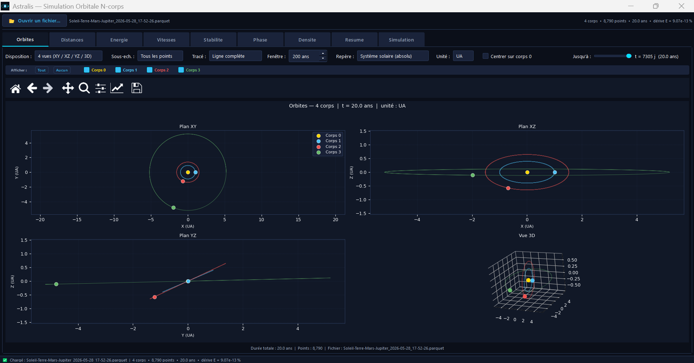
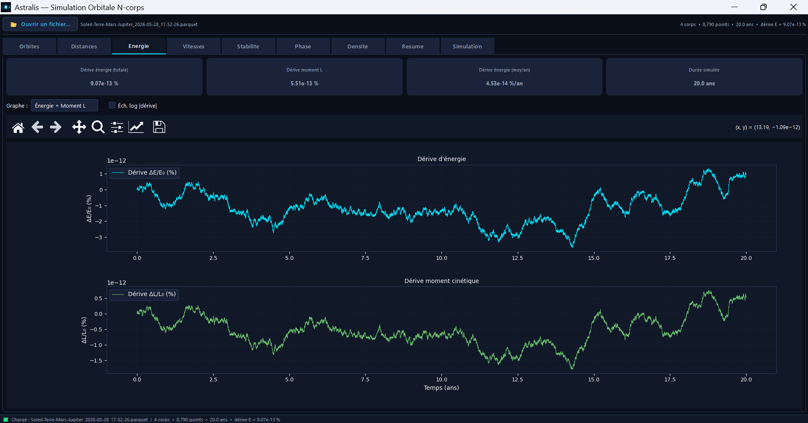
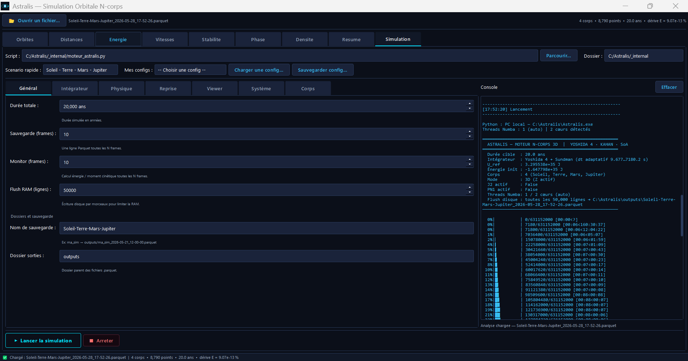

Explorez la physique de l'univers avec un simulateur gravitationnel 3D haute précision — intégrateurs symplectiques, relativité post-newtonienne et forces de marée.
Télécharger pour Windows// Captures d'écran
Visualisez l'évolution orbitale en temps réel avec des graphiques d'énergie, de moment cinétique, et des orbites 3D.

Rendu Matplotlib des trajectoires planétaires avec contrôle de repères équatoriaux.

Suivi de la conservation de l'énergie totale et du moment cinétique du système.

Interface complète : choix de l'intégrateur, conditions initiales et effets physiques à la volée.
// Moteur physique
Astralis est un simulateur gravitationnel 3D de pointe. Un projet né de la collaboration entre L. Capdevila (conception et direction) et l'IA Claude (programmation).
Intégration symplectique d'ordre 4 de Yoshida garantissant la conservation à long terme de l'énergie et du volume dans l'espace des phases, idéale pour les simulations sur des millions d'années.
symplectic · order-4Contrôle automatique du pas de temps basé sur l'accélération locale : plus fine lors des rapprochements planétaires, plus large en espace libre, pour un équilibre optimal entre précision et performance.
adaptive · auto-stepCorrection relativiste de premier ordre (PN1) simulant la précession du périhélie de Mercure et les effets de courbure de l'espace-temps aux vitesses orbitales élevées.
GR · PN1 · perihelionPrise en compte du terme J2 du potentiel gravitationnel pour modéliser les effets de l'aplatissement polaire des corps planétaires sur les trajectoires en orbite basse.
J2 · oblateness · zonalModélisation des forces de marée gravitationnelles via le coefficient d'amour k2, permettant de simuler le transfert de moment angulaire et l'évolution des systèmes satellites-planètes.
tidal · k2 · love numberInterface graphique complète avec tracés en temps réel de l'énergie et du moment cinétique, et exportation des données en CSV pour une analyse post-simulation externe.
Matplotlib · plots · CSV// Démarrage rapide
Trois étapes suffisent pour lancer votre premier système solaire simulé.
ÉTAPE 01
Cliquez sur le bouton Télécharger pour Windows pour récupérer le fichier Setup_Astralis.exe.
ÉTAPE 02
Exécutez le fichier téléchargé et suivez l'assistant d'installation. (Ignorez Windows SmartScreen s'affiche, cliquez sur Informations complémentaires → Exécuter quand même).
ÉTAPE 03
Ouvrez Astralis depuis votre bureau, chargez les conditions initiales du Système Solaire et démarrez la simulation.